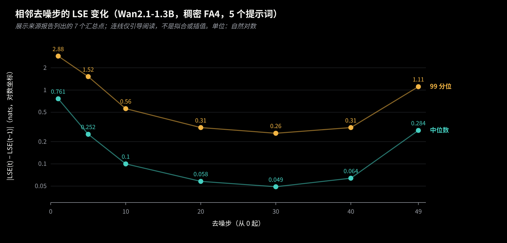
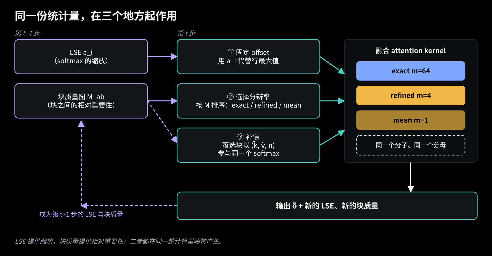
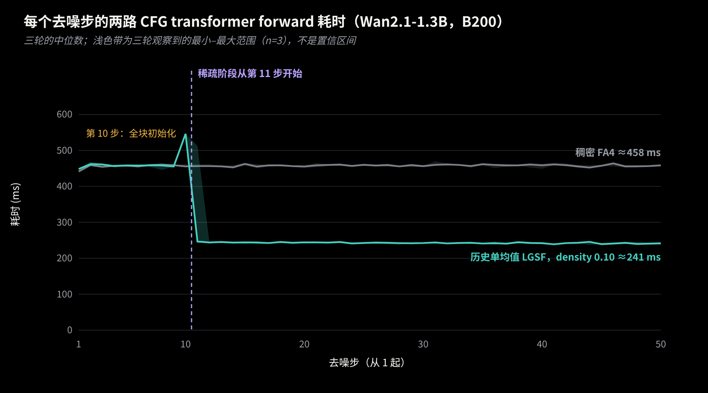
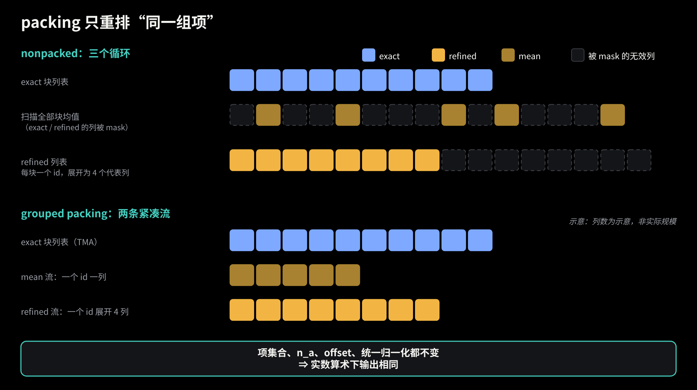
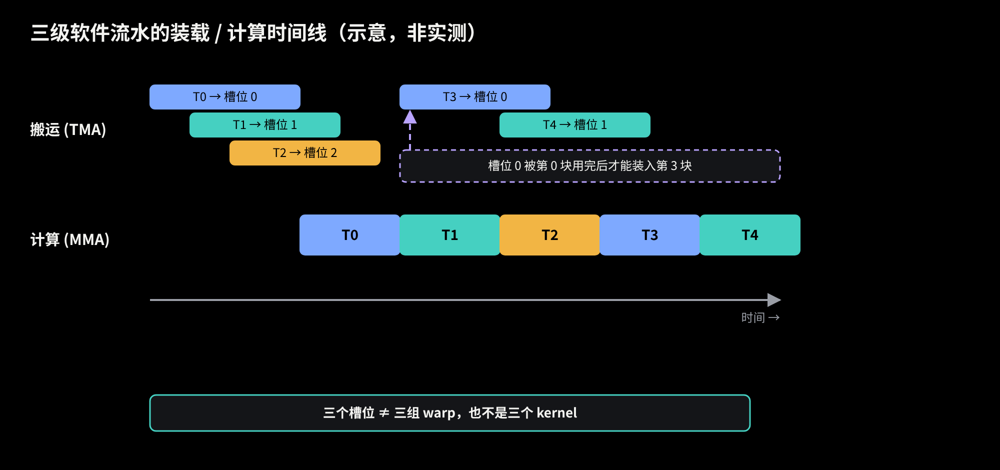
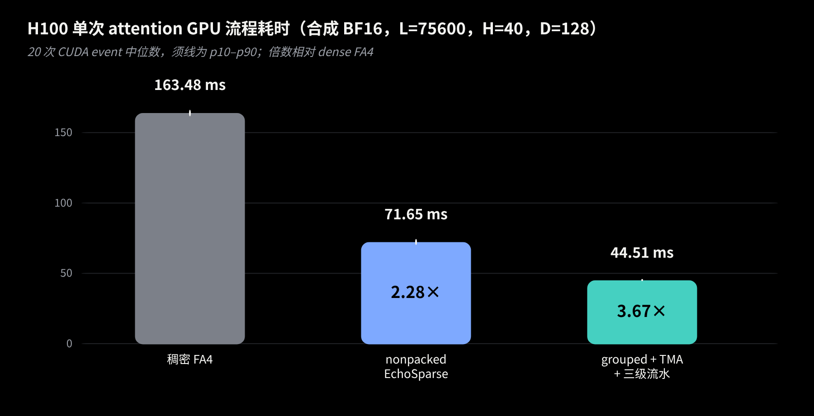

EchoSparse：让上一步的统计量为下一步指路，再把稀疏 attention 排得更紧
作者 Shitong Shao (yuqs)
视频扩散模型的 self-attention 序列长得吓人。Wan2.1-14B 生成 720p、81 帧的视频，单层要处理约 7.5 万个 token，一次前向过几十层，一个视频要去噪 50 步。很多 KV 块对某个 query 几乎没有贡献，跳过它们看起来很划算。可是一动手就卡在三件事上：不先把所有块扫一遍，怎么知道该跳谁？跳掉的块到底丢了什么，补得回来吗？结构选好之后，GPU 真的能跑快吗？
EchoSparse 用同一个设计回答这三件事：去噪相邻两步里，每个 attention 行的统计量变化很小，所以上一步留下的 LSE（log-sum-exp）和各块的质量（block mass）可以在本步一起用。LSE 提供 softmax 的缩放，块质量提供“哪些块相对重要”的排序。 这篇文章按推导的顺序走一遍数学，再看它怎样落到数据布局和 GPU 流水线上，最后给出 H100 实验分支上的一组测量。
代码在这里：W2GenAI-Lab/EchoSparse-Attn。下面是仓库里的原动画，文章的顺序和它一致；网页版里还嵌有可重放的原始 Canvas 动画。
先交代范围。主线 README 目前支持 B200（SM100）和 RTX 5090（SM120）；H100（SM90）和 RTX 4090 的正式适配还在 TODO 里。文中 packed 代表向量、TMA 与三级流水的内容来自 H100 实验分支，没有合入主线，我会一路标明。
1. 一行 attention 就是一个加权平均
固定一个 query q∈Rd 和一组 key/value {(kj,vj)}j=1N，记 sj=q⊤kj/d。这一行的输出是
o=∑jesj∑jesjvj.它是 vj 的加权平均，权重 esj 归一化后就是概率。所有 attention 实现都依赖一个小事实：对任何与 j 无关的常数 c，
o=∑jesj−c∑jesj−cvj,因为分子分母的 e−c 约掉了。FlashAttention 取 c 为边扫边更新的行最大值，每次最大值变大，已累加的结果就要整体缩放一次，另外还要一次逐行 max 归约。
2. 上一步的 LSE 当作固定偏移
记 a=log∑jesj 为该行的 LSE。取 c=a，esj−a 恰好就是 attention 概率。算完之前我们当然不知道本步的 a……但等一下，相邻两步的输入差不多，a 会差多少？

图 1 Wan2.1-1.3B、稠密 FA4、5 个提示词，同层、同 CFG 分支、同一行的 ∣LSE(t)−LSE(t−1)∣，自然对数单位。图中展示来源报告列出的 7 个汇总点；连线只是引导视线，不是拟合或插值。数据：docs/REPORT.md §3（B200 历史开发实验，仓库 Owen718/lse-sparse，commit 05e2dab）。
图里有两件事要老实看。中间阶段，中位数只有 0.05 到 0.1 nats，很安静；可是开头（第 1 步中位数 0.76）和最后几步（第 49 步 0.28）明显更大，p99 更是到了 2.88 和 1.11。所以“LSE 几乎不变”并不是对每一步都成立。报告里还记着个别（层, 头）的极端行，|δ| 上百，原因没查明。
那它还能当偏移用吗？能，原因在于：偏移是恒等变换，正确性不依赖前后 LSE 接近。对任何给定的项集合，减去任意固定的 c，输出都不变。所以取上一步同层、同 CFG 分支、同一行的 LSE 作为本步固定偏移 ai，本身不引入误差。接近与否影响的是别的东西：缩放后的行和靠近 1，不容易上溢下溢，kernel 才能省掉 max 归约与 rescale。仓库的实测是，同样的块列表下 kernel 时间约少 47%。行和偏得太远的 tile（README 给的数字约 0.5%）会被标记出来：对它选中的 exact 块用 online softmax 重跑，再叠加跳过块的均值补偿。注意，这不是重算整个 dense attention，也不会自动保留四代表那种压缩形式。实现里用 log2/exp2，数学上没有区别。
这个恒等式只管“固定一组项时的 softmax”。后面的稀疏选择和代表压缩是另一回事，那是近似。
3. 每个块用什么分辨率
把序列按 64 个 token 分成 KV 块，query 按 128 行分成 tile。对 query tile a 和 KV 块 b，块可以用三种分辨率之一参与计算，动画里把用到的行数记作 mb：
- mb=64，exact：保留块里全部原始 token；
- mb=4，refined：用 4 个聚类代表向量代替整块；
- mb=1，mean：用块的平均 K 和平均 V 代替整块。
谁来决定？一个自然的量是
Mab=i∈a∑j∈b∑esij−ai,这里 ai 是上一步的 LSE。它是用历史 LSE 缩放过的、未归一化的块质量：当先验和真实 LSE 接近时，它接近“tile a 的各行放在块 b 上的概率”，但并不自动等于当前步精确的归一化概率。代码在选块之前会再做缩放和校准（按 tile 汇总 exp(ai−LSEinew) 来重新缩放质量，log2 实现里是 2ai−LSEinew，LSE 是对数量，不能直接相除；跳过块的估计再用已精算块校准），所以别把 Mab 当成精确概率。
设共有 B 个 KV 块、密度 ρ：质量最大的 k=round(ρB) 个块（外加局部邻居）用 exact；接下来按预算 R 的一批块用 4 个代表，README 的说法是落选块里概率最高的约三分之一；其余用 1 个均值。重点是，没有任何块被丢掉。落选块只是降低了分辨率，仍然进入下面统一的 softmax。
4. 统一的 softmax：一切都是 (k~a,v~a,na)
三种分辨率可以写成同一形状的项。exact 项就是原始 token，na=1；mean 项是块内平均 K、V，na 是块里的有效 token 数（尾块可能不足 64）；refined 项是一个 cluster 的平均 K、V，na 是该 cluster 真实的 token 数。输出写成
o~=∑anaeq⊤k~a/d∑anaeq⊤k~a/dv~a.有两个地方特别容易写错。第一，na 必须同时出现在分子和分母里：一个代表替 na 个 token 说话，就要在分母里占 na 份，分子里也乘 na 份。把 naex 写成 ex+lnna，它就是 logit 上的一个 lnna 修正，实现里加的是 log2na。空 cluster 的 lnna=−∞，权重自然为零，padding 也一样。第二，exact 项和压缩项共用同一个分子、同一个分母。不能各算一个 softmax 再相加——那样每个部分都被归一化成 1，相对质量全丢了。
用个小例子看看。一个块只有 4 个 token，logits 是 s=(0,0,2,2)，v=(1,1,0,0)。精确值：分子 2，分母 2+2e2≈16.78，输出约 0.119。如果整块用一个 mean：平均 logit 是 1，n=4，分母 4e≈10.87，平均 v 是 0.5，输出 0.5。嗯，差得不是一点半点。但把前两个、后两个各聚成一类：logits 分别为 0 和 2，n=2，结果和精确值完全一致。
近似就出在这里。对一般互不相同的 kj，∑jesj=nesˉ（Jensen），平均 V 也不是按真实权重加权的 V。所以相对原始 dense attention，代表压缩是近似，不是恒等变换。反过来，什么时候能严格恢复？对固定的 query，只要一个 cluster 里所有 key 的 logit 相同，count 加权的代表就精确还原这个 cluster 的贡献，key 完全相同是它的一个充分条件，但不是唯一情形。聚类要做的事，就是让同一类里的 key 在 query 眼中尽量没有差别。
5. 在 query 度量下聚类
那“没有差别”怎么量？第一反应是直接对 K 做欧氏 k-means……可是 attention 只通过 q⊤k 看 key，K 空间里远的两个点，query 未必分得出来。
设 δ=k−k′ 是列向量（把 1/d 并入 q）。两个 key 在 query qi 面前的 logit 差是 qi⊤δ，对所有 query 取平均的平方误差是
L1i∑(qi⊤δ)2=δ⊤Gδ,G=E[qq⊤]=MM⊤,其中 M 是 G 的 Cholesky 因子，于是这等于 ∥M⊤δ∥2。若把 key 按行放进矩阵 K，变换后的坐标就是 X=KM，在 X 里做普通欧氏聚类，最小化的就是各 cluster 内 query 看到的平均 logit 离散度。
细节要补一句：实现里不直接分解 G，而是 Gϵ=G+ϵI（ϵ 取平均对角的 10−3 倍，保证 Cholesky 稳定）。于是变换后的平方距离是
∥Mϵ⊤δ∥2=δ⊤Gδ+ϵ∥δ∥2,也就是原来的平均平方 logit 差再加一项很小的欧氏距离。无正则的那个等式是严格的恒等式，带正则的是实际实现，只是在 query 度量上轻轻掺了一点欧氏距离。
每个 64-token 块分成 4 类：用 64 个 probe query 为每个 token 提供权重，做加权 Lloyd 迭代（从四个连续的 16-token 组开始，默认最多 6 次）。权重只影响谁分到哪一类；写回的代表 K、V 是 cluster 内的普通均值，na 是真实 token 数，这样第 4 节的统一公式才成立。
6. 时间反馈：边算边统计
第 3 节需要质量图，如果每步都单独拿全部块去精算打分，省下的又吃回去了。EchoSparse 的办法是让本步已经在算的 exact 块顺便产出质量：固定偏移让 esij−ai 接近概率量级，kernel 在计算选中块时按 64-token 块累加，就是这些块的 Mab。
被跳过的块没有精确的 sij，要估一个。EchoSparse 不额外做一遍全量精确的 QK 打分，只运行一个轻量的 estimate_skipped 过程：每个 query tile 只抽样若干行，用块均值估计落选块的质量，再用已精算块做校准（校准系数夹在 [1,64] 内），同时得到下一步用的缩放。

图 2 同一份统计量在三处起作用：LSE 做固定偏移，块质量排序决定每块的分辨率，落选块以 (k~,v~,n) 参与同一个 softmax；融合 kernel 的输出又产生下一步的 LSE 和块质量。
这个回路需要起点。每个（CFG 分支，层）各自保存自己的状态，CFG 的后续分支可以复用分支 0 的块选择。默认前 9 步直接用 FA4 稠密计算，第 10 步让所有块都经过固定偏移的 EchoSparse kernel，得到精确输出并建立第一张质量图，之后才进入稀疏步。

图 3 历史开发实验（Wan2.1-1.3B，B200，480×832、81 帧、50 步、CFG 6），纵轴是两路 CFG transformer forward 的耗时之和，不是 attention 单独耗时，也不是整段视频。三轮的中位数，浅色带是三轮的最小到最大（n=3），不是置信区间。稀疏组是旧的单均值 LGSF（density 0.10，refine=0，每个分支独立选块），不是当前的四代表或 packed 配置。第 10 步是全块初始化，稀疏阶段从第 11 步开始；第 11 步三轮里有一轮出现了 513 ms，所以那里的色带特别宽。数据：outputs/results/curve13.json。
7. 先算一笔账：10% 的密度剩下多少列
谈布局之前，先数一数一个 query tile 实际要处理多少列。实验形状 L=75600 有 B=1182 个 64-token 块（padding 后容量 75648）。密度 0.10 时 exact 块约 118 个，约 118×64≈7.6 千列；其余约 1064 个块里约三分之一用 refined，约 355 块、每块 4 列，合计约 1420 列；剩下约 709 块各 1 列。压缩列合计 1420+709=2129，与实验记录里的平均值 2129 吻合。
于是每个 tile 面对约 9.7 千列，不到 dense 的 13%，其中压缩列只占五分之一左右。它们很少，但零碎：mean 块只有 1 列，refined 块只有 4 列，既不连续，也离 tensor core 喜欢一口吃下的 64 列很远。列数掉到 13% 以下，下面第 10 节的实测倍数却远没有这个比例，布局确实值得单独花力气。
8. packing：同一个计算，更紧凑的排布
算法到此完整，剩下是 GPU 能否高效地跑它。先说清楚 nonpacked（已发布版）实际怎么走，它并不是把 exact、mean、refined 放进同一张混合列表。源码里是三个循环：一个循环遍历 exact 块列表；一个循环以 128 列为单位扫描全部块的均值，其中 exact 和 refined 块对应的列被 mask 掉；一个循环遍历 refined 列表，每个块 4 个代表、每块一个 id。于是 mean 循环里有大量被 mask 的无效列，refined 列表也要补到固定宽度。在这次测试的计划里，每个 tile 按基线布局要走 1280 个均值列加 1536 个代表列，共 2816 列，而真正有用的平均只有 2129 列，利用率约 76%。

图 4 示意图，列数不代表真实规模。左右两边是同一组项：5 个 mean、8 个 refined 代表、10 个 exact 块。nonpacked 用三个循环，mean 循环里大量列被 mask；grouped packing 把它们整理成两条紧凑的流。
packing 要做的就是重新组织这些列。把参与计算的项记成集合 A，权重 wa=naesa−c，输出 ∑a∈Awav~a/∑a∈Awa。对 A 任意重排、重新分组，或者去掉权重为零的 padding 项（na=0），分子分母作为实数和都不变：加法满足交换律和结合律，删掉的项本来就贡献零。因此，在相同的稀疏 plan、代表 K/V、multiplicity 和统一 normalization 下，packing 是一次等价重组，不引入任何额外的算法近似，实数算术下输出理论上相同。 EchoSparse 相对 dense 的近似来自第 4 节的代表压缩，packing 既没有增加也没有减少它。浮点求和顺序变了，舍入会有细微差别，这属于实现细节。
实验分支的 grouped packing 把 descriptor 分成两条紧凑的流：mean 流一个块 id 对应一列；refined 流一个块 id 对应 4 列，在芯片上按 4⋅block+sub 展开。这里的 4ng→ng 比较的是 grouped 与更早的“逐列 packed 流”：后者给每个 refined 代表列各存一个索引，所以一个 refined 块占 4 个 id，grouped 只存一个块 id；nonpacked 的 refined 列表本来就是每块一个 id，不在这个比较里。把两类来源分到两个循环里，混合 tile 里也不必对两个张量都做 masked load。要强调的是，被打包的是 descriptor 和索引，并没有把所有代表 K/V 复制成一个连续的大张量。
9. GPU 上的搬运与计算：tile、TMA 与三级流水
主循环可以抽象地想成数据在三层存储里流动：HBM、shared memory、寄存器。一个 128 行的 Q tile 在进入 KV 循环之前就装好了，之后在整个循环里复用，并不是每轮重新从 HBM 读；每一轮要搬的是 KV 块（或一组代表列）的 K、V，tensor core 算出 S=QK⊤，再用 S 和 V 更新累加器。如果搬运和计算一前一后串行，tensor core 就在干等。
解法是流水线：消费当前 tile 的同时，后续 tile 的搬运已经发出。概念上可以说“生产者负责取，消费者负责算”，它们之间用环形缓冲区加依赖和等待来协调。H100 的 TMA（Tensor Memory Accelerator）可以用一个 descriptor 描述张量形状，由专门硬件异步把整块搬进 shared memory。exact 块恰好适合：K、V 的布局是 [L,H,D]，一个 64-token 块是其中一块连续的步长 tile，用 block shape [64,1,D] 的 descriptor、在行偏移 64⋅block 处一次取走。
这和 packing 是衔接的。masked 的全局 load 确实可以少搬一些数据，可是 MMA 以固定 tile 形状发射，一个只有少量有效列的 tile 照样要付出差不多的发射与计算开销，无效列越多，浪费越多。descriptor 列更少、masked load 更少，每一轮的有用比例才高，流水线也才有值得重叠的内容。两项优化可以组合使用，组合后的收益以实测为准，这里不给出任何算术定律。

图 5 三级软件流水的装载/计算时间线，纯示意，非实测。当第 0 块被消费完、槽位释放之后，第 3 块才能装入同一个槽位；消费者等“数据到了”，装载者等“槽位空了”，这些就是文中说的依赖。
实验分支现在实现的就是这个组合：exact 块经 TMA 加载，三级软件流水让搬运与 dot 重叠，而 grouped 的代表列仍然是指针 gather，没有走 TMA。流水由 Triton 的软件流水调度生成：三个 stage 是环形缓冲区的三个槽位，不是三组分工不同的 warp，更不是三个 kernel。实验里 TMA 单独打开几乎没有收益，只有和多级流水组合才快。顺带一提，主线 SM120 的 kernel 按 32-key 的一半来走一个 64-token 块，而 H100 实验候选用的是 64 宽路径，二者别混为一谈。
真正独立的 producer/consumer 架构（专门的 warp 只搬运，其余 warp 只做 MMA）还没有实现。在 Triton 3.6 的 SM90 路径上，我们试了 warp specialization 开关，寄存器、spill、shared memory 与时间都和普通软件流水一致，没有效果；手写的 WMMA 加 cp.async 原型反而更慢。要触到它，需要手写 wgmma 或 CuTe 内核，那是后续工作。
10. H100 上的实测

| 方案 |
耗时 |
相对 dense FA4 |
相对 nonpacked |
| 稠密 FlashAttention-4 |
163.48 ms |
1.00× |
— |
| nonpacked EchoSparse（已发布版） |
71.65 ms |
2.28× |
1.00× |
| grouped descriptor + TMA + 三级流水 |
44.51 ms |
3.67× |
1.61× |
测量口径：合成 BF16 的 Q/K/V，形状 [B,L,H,D]=[1,75600,40,128]，非因果，稀疏密度 0.10，稀疏计划冻结并由各方案共享，20 次 CUDA event 计时的中位数；对照是 FlashAttention-4（入口 flash_attn.cute.interface.flash_attn_func）。稀疏方案的“complete”指 GPU 上的整个稀疏流程，包含代表向量构造和 packing，不含 host 端 descriptor 构造、scratch 分配与编译。这是单次 attention，不是整层 Transformer，更不是端到端视频生成；dense 与稀疏计算的项不同（稀疏平均约 118 个 exact 块加 2129 个压缩列），所以这张表说的是同一份稀疏计划在不同实现下的开销，不代表视频生成会有同样倍数的加速。原始记录见 evidence/h100_attention_benchmark.json（实验分支结果的脱敏副本）。
1.61× 来自 packing 与流水化这一系统优化，3.67× 里还包含稀疏本身相对 dense 的收益。仅供参考：Wan2.1-14B 在 packing 路径上完整生成一次，从 818.60 s 降到 764.57 s（1.07×），这个比较只相对 nonpacked，每个方案各跑一次，也没有 dense 的完整基线。
11. 适用范围与后续
B200 与 RTX 5090 的结果（含端到端生成）在主线 README 里。H100 路径目前只在实验分支，需显式打开 grouped 代表向量、TMA 和流水级数，尚待集成进主线并补齐多模型 benchmark。最新主线还没有正式的 RTX 4090（SM89）后端，需要单独适配与验收；H100 的 TMA 路径也不能直接搬到 Ada 上。动画里的历史 RTX 4090 数据属于另一批实验，和本文的 H100 测试不是同一个口径。独立的 producer/consumer 调度同样还在路上。
回头看，同一个想法贯穿始终：上一步的统计量既让 softmax 免去 max 与 rescale，也给选块提供排序，还让压缩有了与概率对齐的标尺；统一 softmax 把 exact、refined、mean 放进同一个分子分母，于是 packing 只需要关心“同一组项怎么排”。数学上的等价，是 infra 敢大胆重排数据和流水线的底气。